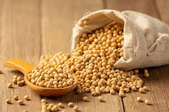

A soja é uma planta que cresce principalmente em áreas rurais, onde os agricultores cultivam para produzir alimentos, óleos e outros produtos. Mas ela também tem uma forte ligação com as cidades, porque muitos desses produtos chegam até o consumidor final nas lojas, supermercados e restaurantes. Além disso, a soja é um exemplo de como a produção agrícola impacta a economia urbana, gerando empregos e movimentando o comércio. Então, ela realmente funciona como uma ponte entre o campo e a centro urbano, mostrando como a nossa alimentação e economia estão interligadas!
